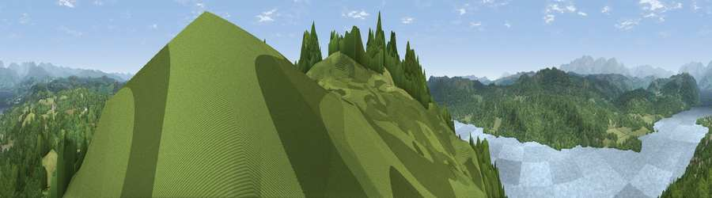

Viewpoint near Winster
#2135 in England · top 12% of its area beats it · near Winster · access?Where it is
The exact computed spot (SD 39425 92038). Click the marker for map links.
Public access: no public right of way or access land is recorded at this exact spot — it may be on private land. Computed from Natural England's CRoW access layer and OpenStreetMap rights of way — not the legal definitive map. Always verify locally.
The view, rendered

A 360° render of this exact spot computed from the terrain model, tree cover and land cover — summer colours, afternoon light, calibrated against photographs of famous viewpoints. Real trees, hedges and buildings will differ in detail.
The panorama
Grey silhouette: terrain skyline in each direction (720 bearings, Earth curvature and refraction included). Dashed green: skyline with trees (+15 m) and buildings (+8 m) as obstacles. Blue strip: how far the ground is visible on each bearing.
Where the view opens
Wedge length = distance to the farthest visible ground on that bearing (vegetation-aware). Rings at 10, 25 and 50 km.
What fills the view
50% woodland · 31% grassland · 19% water
Angular shares of the visible panorama (visual magnitude), not map area. Landscape diversity 0.45 (0–1 Shannon).
Key numbers
More beautiful places nearby
The staircase of upgrades: each row has a higher view potential than everything closer. Driving times are estimates from straight-line distance, calibrated against real road routing — check an actual route before setting out.
| Place | Direction | Drive | Score |
|---|---|---|---|
| Moor How | SSE · 1 km | ~3 min | 76.5 |
| Viewpoint near Finsthwaite | S · 3 km | ~8 min | 84.7 |
| Viewpoint near Finsthwaite | S · 4 km | ~8 min | 90.3 |
| The Knoll | S · 404 km | ~386 min | 91.0 |
54.32031, -2.93276 · source: screening · position refined by local search. Computed location — check access rights before visiting.